Basic Reference Graphics Engineering
The Graphics Editor creates, displays, saves, and operates graphics. A generated graphics page includes static elements, operable objects, and added images.
This document refers only to graphical requirements for Desigo.

NOTE:
We reference various standards or country-specific versions only if a corresponding object supports them.
Graphic Display
The graphics standard simplifies engineering and operation on Desigo CC projects and provides plant graphics with a uniform appearance and operation. It also permits comprehensive and efficient engineering of plant graphics using drag-and-drop. It is also true if Desigo Automation and third-party systems are integrated on the management platform. The following requirements must be fulfilled for the drag-and-drop function:
Requirements for Drag-and-Drop Function | ||||
System | Description | Desigo | Desigo | System |
Desigo | No | Yes | (Yes) | Yes |
Third-party systems | ‒ | ‒ | ‒ | Yes |
The Desigo CC graphics standard supplies a set of the following libraries:
Displaying Libraries | |||
Form | Configuration Mode | Test Mode | Online Mode |
2D | 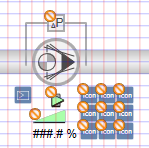 | 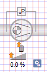 | 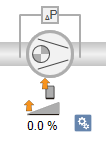 |
2D+ | 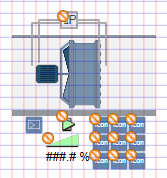 | 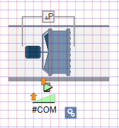 | 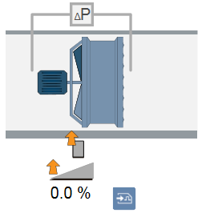 |
3D |
|
|
|
The Desigo CC graphics standard covers nearly all requirements placed on building technology graphical display. The Graphics Editor can create and animate missing objects as needed.
NOTE:
The engineering effort to generate a graphics page depends on the selected library type. As a result, use the graphics library that was sold as part of the project.
Standards
Most symbols in the graphics standard were created based on recognized standards.
Graphic Symbol Standard | |
Electrical and mechanical installation | Default Template |
Air handling units and ventilation, air conditioning, and heating plants | EN 1279 ISO 7000 / IEC 60417 |
Refrigeration plants | DIN 30600 |
I&C units for heating plants | DIN 30600 ISO 7000 / IEC 60417 |
Passive and active devices including sensors, air dampers, fan, etc. | EN 1279 EN 62424 |
Diagrams and for wiring between devices and electrical systems | EN 60617 1...13 |
Fire systems | DIN 14034, DIN 30600 |
The graphics standard includes as a rule all elements required to engineer normal plant graphics:
- Libraries with symbols
- Predefined graphics pages
- Graphic templates
- Standard color palettes
Regional companies (RC) cannot avoid developing their own graphics based on applicable standards in the implementation of their projects (localization).
A support system to record and track problem messages and requirements after supplementation by RC support ensures that the standard is maintained at the latest state in an optimum manner.
Layout of Graphic Pages
All information required by the user is displayed on graphics pages, with display being either direct or by clicking an object.
The graphics standard supplies all the elements required to operate and monitor various plants.
The Graphics Editor creates, displays, saves, and operates graphics. The data points are displayed in System Browser after data import. The object references of BACnet objects can be dragged-and-dropped directly from System Browser to the graphics page. The associated symbol is then placed in the graphic.
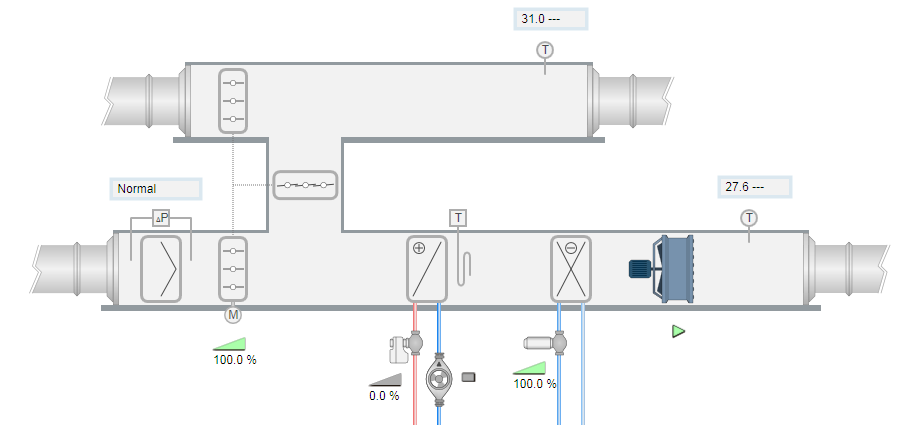
2D Display
The graphical 2D display of the Desigo CC library meets EN 1279. The graphics version of individual symbols corresponds to a modern display type for management platform operation and therefore does not deviate from the display as set forth in the engineering standard.
Example from a standard:
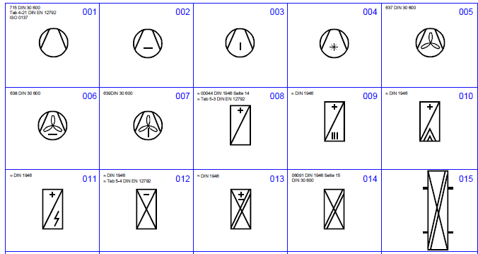
2D display with gray ducts
2D display with colored ducts based on the position of air handling
2D+ Display
The 2D+ display is less technical and displays a plant more realistically to the actual installed components on the electrical and mechanical installation. The 2D+ display is suitable where no standard is required and 3D display is too complex and engineering too expensive.
2D display with gray ducts:
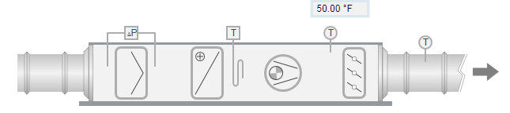
2D+ display with colored ducts based on the position of air handling
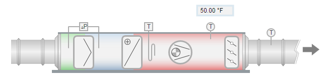
2D+ display, optically more realistic (for example, motor)
3D Display
The 3D display is the most complex of the three types of display. It is very time consuming to engineer and requires a high level of spatial imagination on the part of the project engineer. What may appear simple for a ventilation plant, becomes increasingly difficult when drawing heating or refrigeration plants. Pipe connections with branches and intersections, in particular, may result in a not-to-be-underestimated problem when drawing. 3D graphics pages should therefore only be generated if agreed to as part of the customer contract.
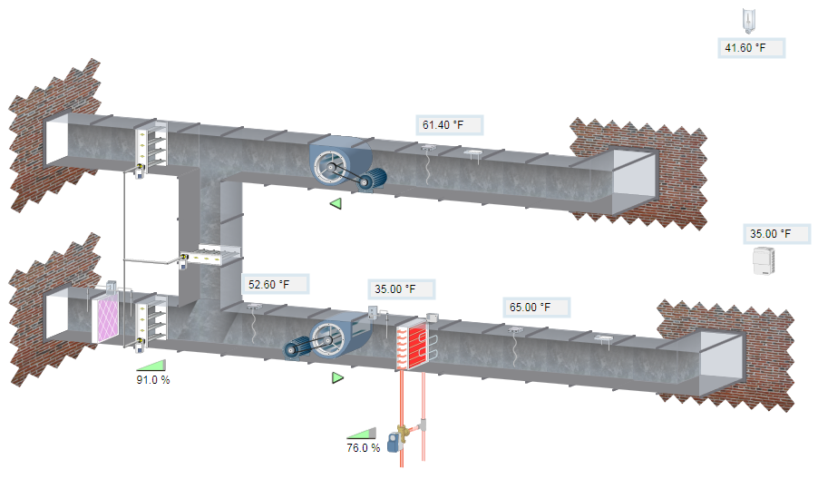